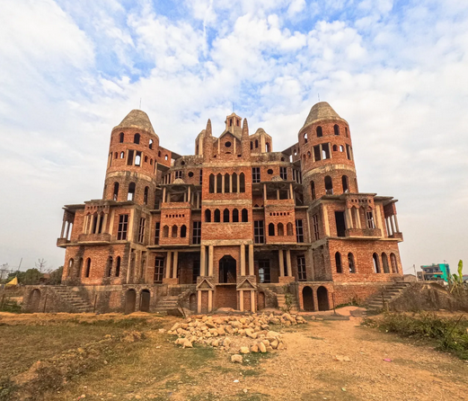

Padmpur chitwan
Padampur is a small village located in Kalika Municipality of Bagmati Province of Nepal. At the time of the 1991 Nepal census it had a population of 8,884 people living in 1,559 individual households. It was transferred in new location named Saguntol by Government of Nepal and completed with in 8 years i.e. from 2050 BS to 2058 BS. Previously it was at the lap of Rapati river and inside the Chitwan National Park. Flood of Rapati river in monsoon season destroy farmers crops. Wild animals also harmed their crops. Transportation, electricity, road and educational facilities were beyond people's access. It was known as one of the remote areas of the Chitwan district. In a view of agriculture, It was the best place for farmers. After the new dawn of democracy in 2046, New government was asked to shift this village for peoples safety and conservation of forest and wild animal. The cabinet of Girija Prasad Koirala was assured to shift in a convenience place soon and started the task immediately. This task was successfully done by the politician Baburam Puri of the Nepali Congress. The late Sailaja Acharya visited the people and understood their griefs and proposed to shift it next to Sagoontol near Jutpani VDC. This was a very difficult task to accomplish successfully. People from the Western Chitwan were stood against it but government took bold decision in favour of people of Padampur. Now it is about 2.5 km (1.6 mi) east to Bharatpur, district headquarters of Chitwan. Electricity, roads and transportation facility are comparatively better here. 2,800 households were there now.

According to the 2001 census, the total population of the VDC was 11,336 with total households 2,137 (Immigration increased rapidly after relocation by almost 50% with in 10 years reaching 3,231 households consisting 14,924 people). Tharus are the dominant ethnic group with 45.89% of the total VDC population. Brahman, Kshetri, Tamang, Gurung and Newar are other castes here. Mainly banana, maize and oil are farmed here. Except ward no 1 there are deep tubewells to Irrigate farmlands. Poultry, dairy, epiculture, mushroom farming and goat keeping have great potentials here. A campus, A higher secondary school, a secondary boarding school and other 7 primary and lower secondary schools are providing education here. Health post, and Post office are too doing their best for providing services to locals. Drinking water is provided in better and modern way. Pipelines of drinking water are available within all roads (113 km) of Padampur. An NGO veterinary office is also serving and helping farmers. Since last 5 years this VDC is starting to be known as one of pocket areas of commercial banana farming of the nation. Nobody is landless here and this is the special feature here. Padampur is very attractive location for migratory view and daily people are migrating here. It is like a colonial place for settlement of people. Government has sifted it in a well planned way and that is why it is the second model VDC of Nepal (first is In Bardiya district). Now this village has merged in Kalika Municipality and shares 4 wards in it i.e. Kalika -9, Kalika-10, Kalika-11 and Kalika-12.